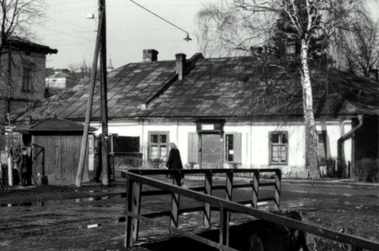
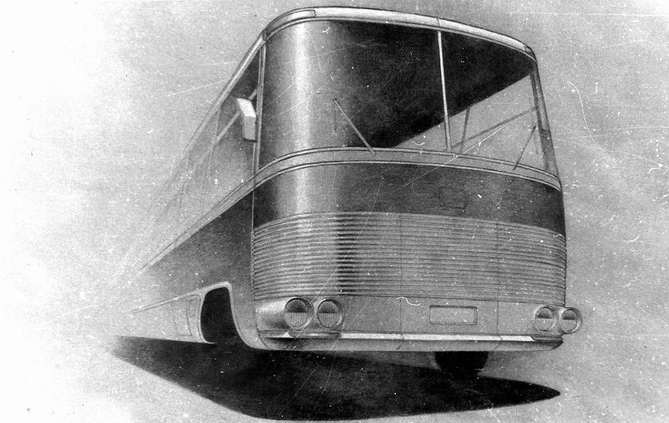
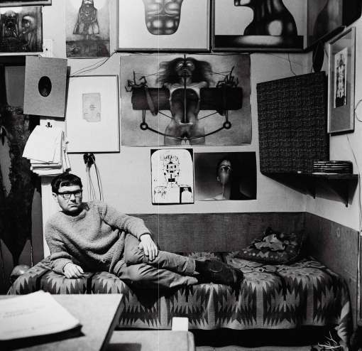
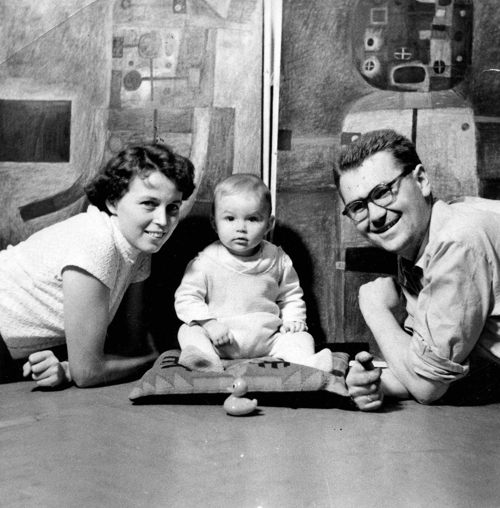
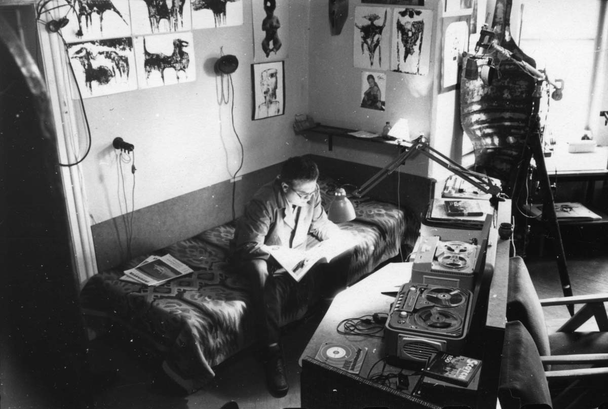
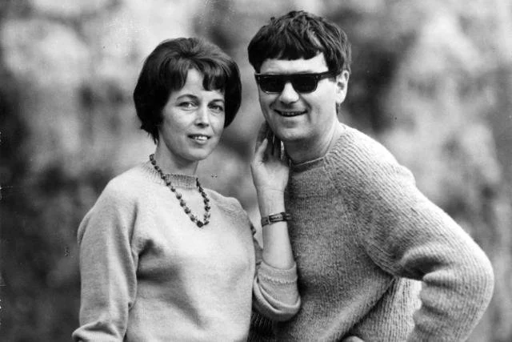

-
1929
24 lutego 1929 r. w Sanoku na świat przychodzi Zdzisław Beksiński. Malarz był jedynym dzieckiem Stanisława
Beksińskiego i Stanisławy Dworskiej.

-
1952
W 1952 r. Zdzisław Beksiński zdobył dyplom architekta na Politechnice Krakowskiej. Po
zakończeniu studiów objął funkcję inspektora nadzoru budowlanego, wypełniając w ten sposób zobowiązania
wynikające z nakazu pracy.

-
lata 50
W latach 50. Zdzisław Beksiński rozpoczął pracę w Sanockiej Fabryce Autobusów „Autosan”, którą założył
jego pradziadek. Zajmował się tworzeniem stylistyki prototypowych autobusów i mikrobusów. Zadaniem Zdzisława
Beksińskiego było m.in. projektowanie znaków graficznych oraz nadwozi pojazdów. W czasie wolnym od pracy
realizował swoje pasje – malował, tworzył rysunki i wykonywał fotografie.

-
1958
26 listopada 1958 na świat przyszło jedyne dziecko Zdzisława i Zofii – syn Tomasz.

-
lata 70
Beksińscy zdecydowali się opuścić Sanok po decyzji władz miasta o rozbiórce rodzinnego domu Beksińskich przy ulicy
Jagiellońskiej nad Potokiem Płowieckim. Wiosną 1977 Beksiński zakupił w Warszawie mieszkanie znajdujące się w bloku
przy ulicy Sonaty 6 na osiedlu Służew nad Dolinką. W mieszkaniu przy ul. Sonaty w stolicy spędził resztę życia.
Wraz z małżeństwem zamieszkała matka artysty, Stanisława Beksińska, a potem także jego teściowa tj. matka Zofii,
Stanisława Stankiewicz. Syn Tomasz w 1978 zamieszkał samodzielnie w zakupionym przez malarza mieszkaniu
znajdującym się w odległości ok. 100 metrów, przy ul. Mozarta.

-
lata 90
W późniejszych latach także żona artysty zapadła na chorobę (tętniak aorty), w wyniku czego zmarła 22 września 1998.
Ich syn, Tomasz, popełnił samobójstwo rok później, 24 grudnia 1999. W związku z tymi wydarzeniami oraz twórczością
i śmiercią samego artysty rodzina Beksińskich jest określana przez niektórych jako „przeklęta”.

-
2005
Zdzisław Beksiński został zamordowany w swoim mieszkaniu w Warszawie przy ulicy Sonaty 6 m. 314 w nocy
z 21 na 22 lutego 2005, na kilka dni przed swymi 76. urodzinami.